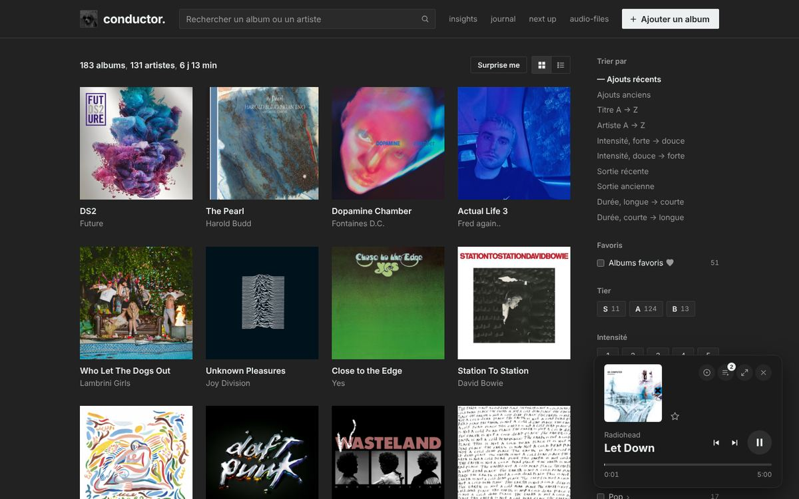
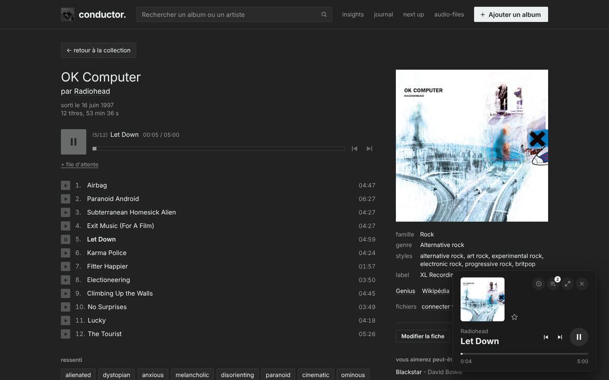
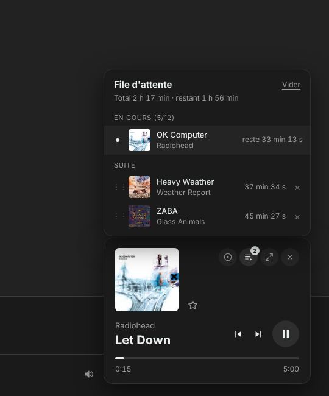
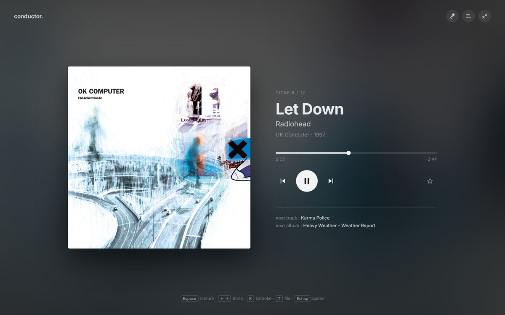
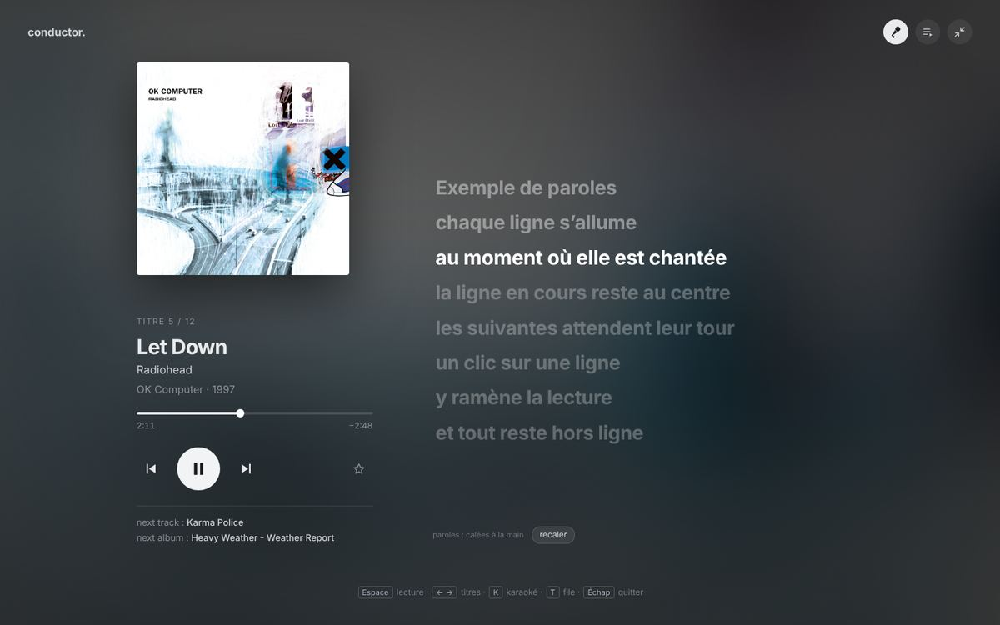
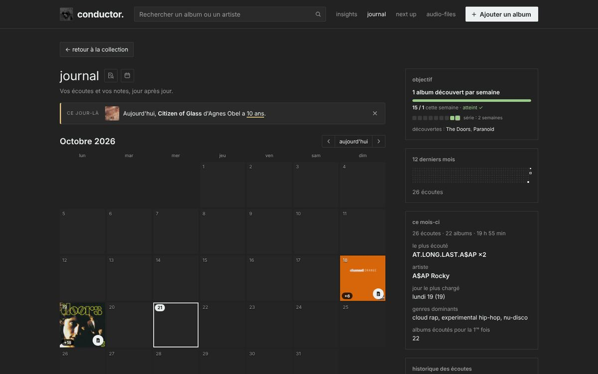
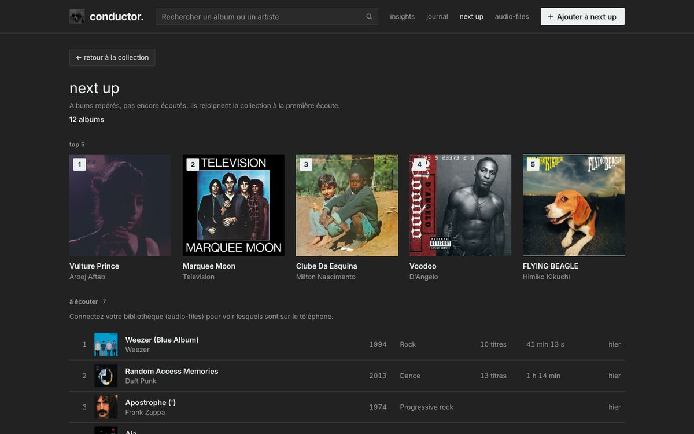
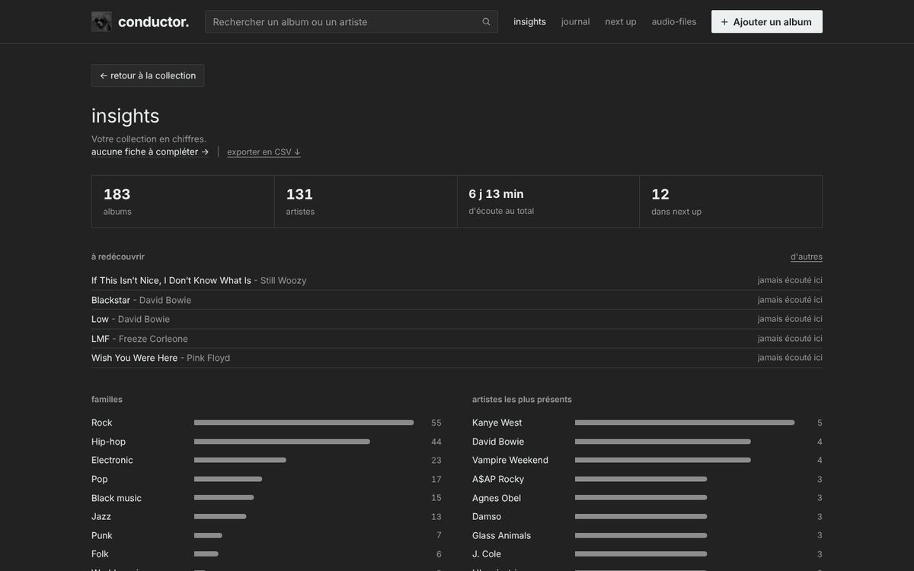
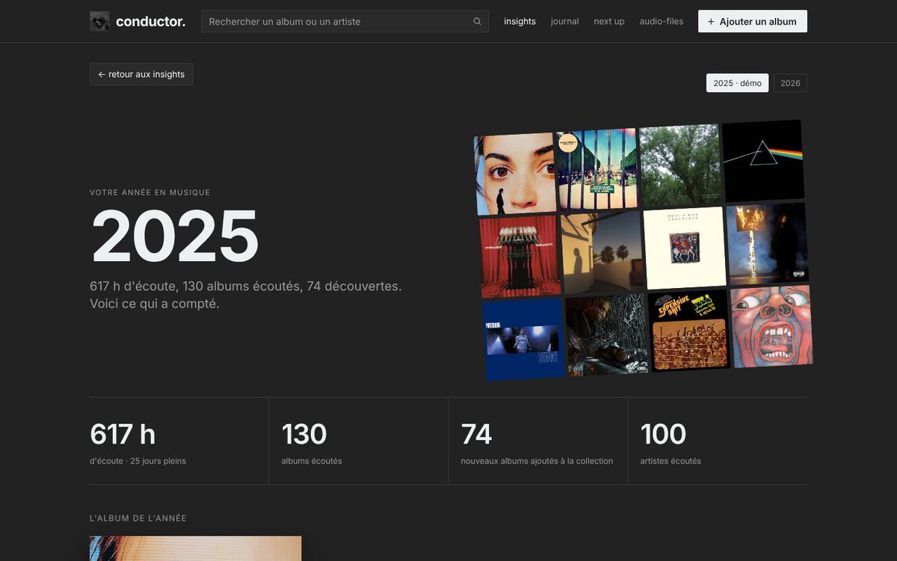
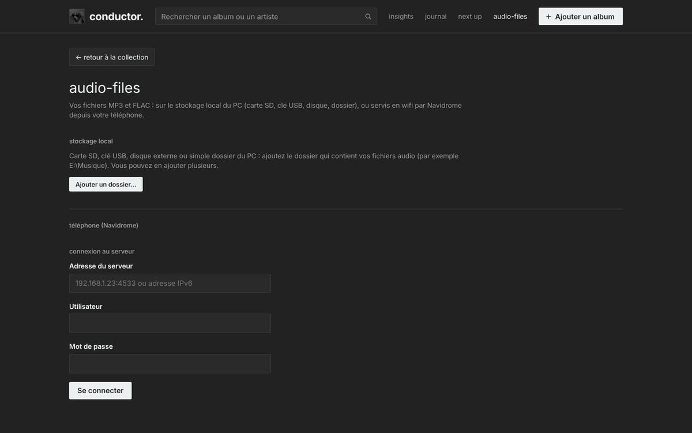

conductor.
conductor.à propos de conductor.
Une discothèque personnelle, un lecteur audio et un journal d’écoute, qui tiennent dans un dossier sur votre PC.
En bref
conductor. est un site web qui ne vit que sur votre ordinateur. On l’ouvre dans Chrome ou Edge comme un simple fichier : pas de compte, pas d’abonnement, pas d’installation, pas de serveur.

Pourquoi ce projet
Les plateformes de streaming savent ce que vous écoutez, mais ce souvenir leur appartient : il disparaît avec l’abonnement, et l’album lui-même peut disparaître du catalogue. conductor. part de l’idée inverse :
- L’album d’abord. On écoute des disques entiers, du premier au dernier titre, comme sur Bandcamp ou Musicboard (les deux inspirations du projet).
- Vos données restent chez vous. Tout est rangé dans un dossier lisible (fichiers texte, images, Markdown), que vous pouvez sauvegarder, copier ou ouvrir avec d’autres logiciels.
- Ça marche sans internet. Une fois les albums ajoutés, la collection, la lecture, les paroles et le journal fonctionnent hors ligne.
- Simple à garder. Du HTML, du CSS et du JavaScript, sans outil de construction : le code se lit et se modifie avec un éditeur de texte.
Ce qu’on peut faire
La collection
- Grille ou liste, tri (ajout, titre, artiste, intensité, date de sortie, durée).
- Filtres : familles et genres, décennies, intensité, tier S / A / B, favoris, « sur le téléphone », lettre.
- Recherche dans tous les champs, accents ignorés :
jazz+fusion(les deux mots),radiohead/bowie(l’un ou l’autre). - Boutons sur les pochettes : ▶ lancer l’album, ≡+ l’ajouter à la file d’attente. Surprise me pioche un album au hasard.
- Couleurs : parcourir la collection par couleur dominante des pochettes (une grille bleue, une rouge…).
- Pas de doublon : un album déjà dans la collection est reconnu, même sous un nom un peu différent (« Remastered », « Deluxe », « The », « feat. »…), et n’est pas ajouté une deuxième fois.
La page album

- Lecteur et liste des titres, titres favoris ★, paroles de chaque titre.
- La fiche : date de sortie, label, genre, styles, ressenti (ambiances), étiquettes, intensité de 1 à 10 et tier (S chef-d’œuvre, A excellent, B très bon).
- Nombre d’écoutes, albums proches dans votre collection, liens Genius et Wikipédia.
- La fiche se remplit toute seule à l’ajout (Deezer, Discogs, MusicBrainz) et se corrige avec Modifier la fiche.
La lecture

- Un seul lecteur pour tout le site : la musique continue quand on change de page, et reprend au même endroit après un rechargement.
- Mini-lecteur en bas à droite, file d’attente d’albums (glisser-déposer pour réordonner, temps restant).
- Enchaînement sans blanc entre les morceaux (le suivant est préparé avant la fin).
- Touches multimédia du clavier (lecture, suivant, précédent), même navigateur en arrière-plan, et le titre avec sa pochette dans le panneau de son de Windows.
- Un album compte comme « écouté » quand presque tous ses titres ont été joués, ou après 30 min d’écoute.
Plein écran et karaoké


- Les paroles synchronisées défilent avec la musique ; un clic sur une ligne y ramène la lecture.
- Quand un morceau n’a pas de paroles synchronisées, vous pouvez les caler à la main : une pression sur Entrée au début de chaque ligne. C’est gardé pour toujours (voir le manuel Caler les paroles).
Le journal

- Un calendrier avec les pochettes écoutées chaque jour, le temps d’écoute, le bilan du mois, « il y a un an », l’historique.
- Objectif de la semaine : découvrir 1 album par semaine, avec la progression et les séries réussies dans le journal, et un rappel sur la collection à chaque ouverture.
- Ce jour-là : en haut du journal, les anniversaires de sortie de vos albums, une bannière par album (« Aujourd’hui, OK Computer de Radiohead a 29 ans »).
- Une note par jour, en Markdown (titres, listes, tâches, liens
[[album]],#étiquettes), aussi enregistrée en fichier.mdlisible dans Obsidian.
Next up et insights

- Next up : la liste des albums à découvrir, à part de la collection. Ceux qui y dorment depuis plus de 3 mois sont signalés.
- Insights : la collection en chiffres (familles, artistes, décennies, intensité), des albums à redécouvrir, les fiches à compléter et l’export en tableur (CSV).

Wrapped : le bilan de l’année

- Chaque année, entre le 20 novembre et le 15 décembre (le jour est une surprise), un bandeau annonce votre bilan de l’année. Avant : « any day now ».
- Heures d’écoute (et l’écart avec l’année d’avant), albums et artistes écoutés, nouveaux albums ; l’album de l’année et le top 10 ; artistes, familles et genres en tête.
- Mois après mois : survol pour les heures et le nombre d’albums, clic pour le bilan du mois (top 5, familles, genres, intensité moyenne). Puis le top 3 de chaque saison.
- Des records (jour le plus chargé, plus longue série, heure préférée, décennie, album le plus vite adopté, le plus fidèle), les albums les moins écoutés de la collection, et l’année résumée en une phrase.
- Tout vient de vos écoutes, sans internet. Familles et genres mènent à la collection, avec un retour au wrapped.
Vos fichiers audio

- Stockage local : carte SD, clé USB, disque externe ou n’importe quel dossier du PC. conductor. lit les étiquettes des fichiers (titre, numéro, durée, pochette, paroles) et relie chaque dossier à l’album de la collection.
- Téléphone : un téléphone Android qui fait tourner Navidrome envoie sa musique au PC, en Wi-Fi, en partage de connexion ou par câble USB (sans aucun réseau, et même sans carte SIM). Voir les manuels.
- Sans fichier, la page album propose les extraits de 30 secondes de Deezer.
D’où vient la musique
conductor. ne vend ni ne télécharge de musique : il joue vos fichiers. Pour chaque morceau, il essaie dans cet ordre :
- Un dossier du PCcarte SD, clé USB, disque, dossier « Musique »
- Le téléphoneNavidrome, en Wi-Fi ou par câble USB
- Un extrait Deezer30 secondes, avec internet, si vous n’avez pas le fichier
Formats lus : MP3 et FLAC.
Ce qu’il faut
Indispensable
- Un PC avec Chrome ou Edge (récents).
- Le dossier
conductor, avec ses deux sous-dossiers côte à côte :app(le site) etdatastorage(vos données). - Un clic sur Autoriser à chaque session, pour que le site puisse écrire dans
datastorage.
Facultatif
- Une connexion internet, pour ajouter de nouveaux albums et compléter automatiquement leurs fiches.
- Vos fichiers MP3 / FLAC sur une carte SD, une clé ou un disque (un lecteur de carte si besoin).
- Un téléphone Android avec Termux et Navidrome (gratuits), et un câble USB qui transfère les données.
- Une clé Discogs (gratuite) pour plus de résultats de recherche.
Tout est gratuit : aucun des services utilisés ne demande de paiement ni de compte, sauf la clé Discogs (compte gratuit).
Avec ou sans internet
| Fonction | Sans internet | Avec internet |
|---|---|---|
| Parcourir la collection, filtres, recherche | oui | oui |
| Pochettes | oui (copies locales) | oui |
| Écouter vos fichiers du PC | oui | oui |
| Écouter depuis le téléphone | oui, en Wi-Fi local ou câble USB | oui |
| Plein écran, karaoké, paroles déjà trouvées ou calées | oui | oui |
| Journal, notes, insights, wrapped, next up, export CSV | oui | oui |
| Ajouter un album depuis vos dossiers | oui | oui |
| Ajouter un album par la recherche, compléter une fiche | non | oui |
| Paroles jamais chargées auparavant | seulement celles de vos fichiers | oui (LRCLIB) |
| Extraits de 30 s | non | oui (Deezer) |
Les services en ligne utilisés
Uniquement pour lire des informations publiques ; rien de vos données ne leur est envoyé, à part le nom de l’album ou du morceau cherché.
| Service | Sert à |
|---|---|
| Deezer | trouver un album, sa liste de titres, sa pochette, les extraits de 30 s |
| Discogs | genres, styles, label, pochettes, recherche d’albums |
| MusicBrainz | date de sortie originale, genres |
| LRCLIB | paroles, simples et synchronisées |
| Genius, Wikipédia | simples liens depuis la page album |
Vos données
Tout ce que vous faites est écrit dans le dossier datastorage, une fraction de seconde après chaque changement. Ce sont des fichiers ordinaires :
datastorage/
├── collection.js la collection, les notes, le temps d’écoute
├── collection.prev.js la version précédente (filet de sécurité)
├── collection.csv copie pour Excel / tableur
├── backups/ une copie par jour (les 7 dernières)
├── covers/ les pochettes
├── lyrics/ les paroles simples
├── lyrics-synced/ les paroles synchronisées (.lrc)
└── journal-entries/ une note par jour (.md)- Sauvegarder, c’est copier ce dossier (sur une clé, un cloud…).
- Changer de PC, c’est copier le dossier
conductorentier. - Aucun compte, aucune publicité, aucun suivi : rien ne quitte votre ordinateur.
Bien démarrer
- Ouvrez
app/index.htmldans Chrome ou Edge. - En bas à gauche, cliquez Choisir le dossier datastorage et désignez
conductor/datastorage. Ensuite, un clic sur Autoriser par session suffit. - Ajoutez un premier album : bouton Ajouter un album (touche N), tapez son nom, choisissez le bon résultat.
- Facultatif : page audio-files, Ajouter un dossier… pour votre musique, ou connectez votre téléphone (voir les manuels).
- Lancez un album, puis P pour le plein écran et K pour le karaoké.
Raccourcis clavier
La touche ? les affiche à tout moment. Les plus utiles :
- Espace
- lecture / pause
- ← →
- titre précédent / suivant
- ↑ ↓
- volume
- P
- plein écran
- K
- karaoké
- T
- file d’attente
- Maj + Suppr
- vider la file d’attente
- O
- ouvrir l’album en cours
- N
- ajouter un album
- S
- rechercher
- R
- album au hasard
- E
- modifier la fiche
- Alt + T
- note du jour (depuis n’importe quelle page)
- Maj + W
- wrapped, le bilan de l’année
- L
- ★ le morceau en cours
- Maj + F
- ♥ album favori (page album)
- +
- album dans la file d’attente (page album)
- C
- copier [[Artiste]] - [[Album]]
- V
- grille / liste
- Alt + G
- collection
- Alt + I J U A
- insights, journal, next up, audio-files
- Alt + C M H
- à compléter, manuels, historique
Limites connues
- Chrome ou Edge uniquement : l’écriture dans
datastorageet la lecture des dossiers utilisent une fonction que Firefox et Safari n’ont pas. - Un utilisateur, un PC : pas de synchronisation entre appareils, pas de version mobile (le téléphone sert de source de musique).
- Un téléphone branché en USB n’est pas vu comme un disque par le navigateur : passez par sa carte SD (lecteur de carte) ou par Navidrome.
- Le navigateur ne laisse pas taper un chemin de dossier : chaque dossier se choisit une fois dans la fenêtre de sélection.
- Avec certains MP3, l’enchaînement sans blanc peut laisser quelques millisecondes de silence (le FLAC est parfait).
Sous le capot
Pour les curieux : une seule page, conductor.html, reste ouverte en permanence. Elle contient le lecteur et affiche les autres pages (collection, album, journal…) dans un cadre. C’est pour ça que la musique ne s’arrête jamais quand on navigue.
- HTML, CSS et JavaScript « nus » : aucune bibliothèque, aucune étape de construction.
- Les étiquettes MP3 (ID3) et FLAC sont lues directement par le site.
- Le disque est atteint par l’API File System Access du navigateur, avec votre autorisation.
Liens
- Code source : github.com/Finsch/conductor
- Guides pas à pas : manuels (Navidrome, câble USB, calage des paroles, tiers).
- Inspirations : Bandcamp, Musicboard, Obsidian.
- Données musicales : Deezer, Discogs, MusicBrainz, LRCLIB.
- Lecture depuis le téléphone : Navidrome.